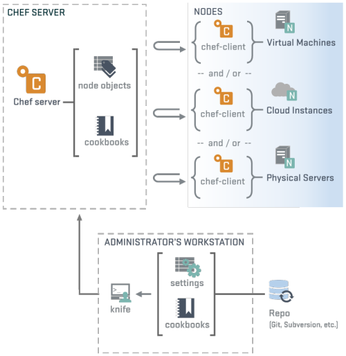

- Establishes consistency
- Represents infrastructure as code (IaC)
- Provides a history of your infrastructure
- Allows management of any number of servers
- Modify code
- Save the changes
- Chef reads these changes
- Chef brings all servers up-to-date
- Provides consistency, stability and control.
- Provides greater agility and faster problem resolution.
- Provides easy means to configure development environments.
- Provides a history of your infrastructure.
- Written in Ruby
- Open Source - Apache 2.0
- Backed by Opscode, great community
- Great community, over 400 contributers and 13,000 commits
Intro to Chef
What is ChefDK?
https://downloads.chef.io/chef-dk/
Provides tools to work with Chef
- chef
- knife
- Berkshelf, Foodcritic, Chef Client, etc.
Major components in Chef
- Workstation
- Chef Server
- Chef Client
- node
- Cookbook

postgresql/
├── Policyfile.rb
├── README.md
├── chefignore
├── metadata.rb
├── recipes
│ └── default.rb
├── spec
│ ├── spec_helper.rb
│ └── unit
│ └── recipes
│ └── default_spec.rb
└── test
└── integration
├── default
│ └── serverspec
│ └── default_spec.rb
└── helpers
└── serverspec
└── spec_helper.rb
What are Recipes?
- Ruby code
- Collection of resources, with an action, name, and attribute-value pairs.
- May have arbitrary Ruby code
- Must be stored in a cookbook
- May be included in other recipes
- May query Chef server for information
Example recipe
user "postgres" do
action :create
end
package "postgresql-server" do
action :install
end
service "postgresql" do
action [:start, :enable]
end
What is a resource?
- Describes state
- Details steps needed to bring node to desired state
- Grouped into recipes
Some useful resources
- directory
- user
- template
- package
- execute
Some examples
%W(git-core postgresql vim).each do |pkg|
package pkg
end
user "ben" do
action :create
end
directory "/home/ben/server/configs" do
recursive true
owner "ben"
group "ben"
action :create
end
template "/home/ben/server/configs/main.yaml" do
source "main.yml.erb"
variables({
somevariable: "Some Value"
})
end
execute "Copy files" do
command "cp -R /etc/skel.d/.* /home/ben/server/"
not_if "test -e /home/ben/server/.bashrc"
end
What are attributes?
- Allows you to configure cookbooks
- Very powerful inheritance scheme.
- Attributes are referenced in cookbooks.
- Attributes are saved on the Chef Server between Chef Client runs.
Attribute precedence

Some examples
node.default[:zdata_postgres][:user] = "ben"
node.default[:zdata_postgres][:config_file] = "/home/ben/server/configs/main.yml"
%W(git-core postgresql vim).each do |pkg|
package pkg
end
user node[:zdata_postgres][:user] do
action :create
end
unless node[:zdata_postgres][:config_file].nil?
directory File.dirname(node[:zdata_postgres][:config_file]) do
recursive true
owner node[:zdata_postgres][:user]
group node[:zdata_postgres][:user]
action :create
end
template node[:zdata_postgres][:config_file] do
source "main.yml.erb"
variables({
user: node[:zdata_postgres][:user]
})
end
end
execute "Copy files" do
command "cp -R /etc/skel.d/.* #{File.join '/home', node[:zdata_postgres][:user], 'server'}"
not_if "test -e #{File.join '/home', node[:zdata_postgres][:user], 'server/.bashrc'}"
end
The run-list
Specifies which recipes should be run on a node or group of nodes, as well as what order they should be run in.
Example
"postgresql::server, redis::server"
Chef Supermarket
https://supermarket.chef.ioDemo 1 - Chef Solo
Getting your feet wet with Chef Solo
- Chef without the Chef Server
- Great for development
Demo 2 - Chef Zero
Real development environments with Chef Zero
- Chef an in-memory Chef Server (called Chef Zero)
- Great for development, much closer to a real Chef Server environment.
Demo 3 - Chef Server
Real Chef Server/Chef Client environment to play with.
- Creates a virtual machine with a Chef Server
- Great way to learn Knife, how to manage a Chef Server
Where Chef maybe isn't a good fit.
- Small deployments
- Static deployments
- Short-lived deployments